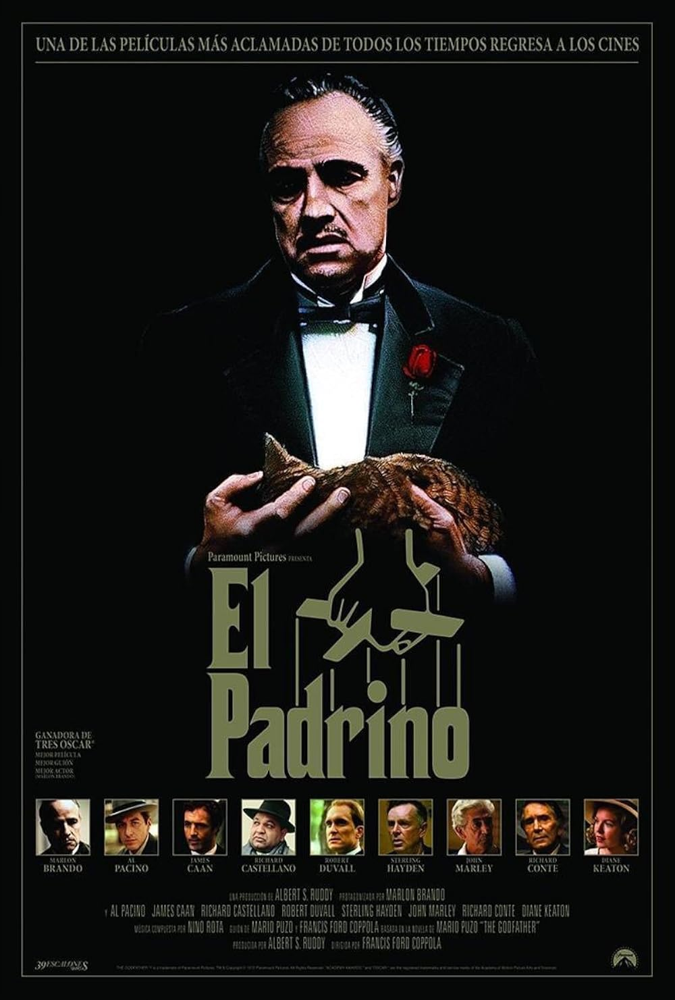
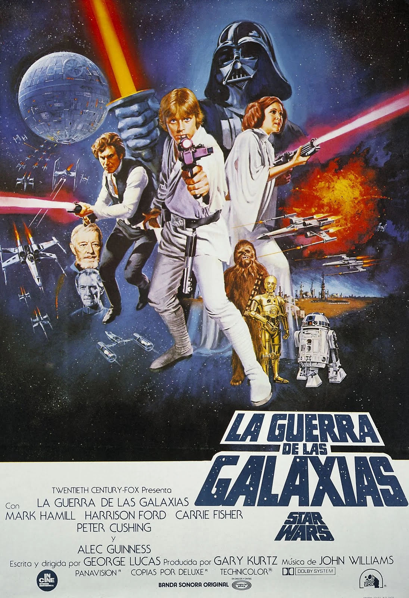

🎬 CineManía 🎬 |
| Inicio | Cartelera | Próximos Estrenos | Clásicos | Contáctanos | Registro | Iniciar Sesión | Encuesta |
Estas son algunas de las películas que marcaron la historia del cine:
| Título | Año | Director | Imagen |
|---|---|---|---|
| El Padrino | 1972 | Francis Ford Coppola |  |
| Star Wars: Una Nueva Esperanza | 1977 | George Lucas |  |
| Titanic | 1997 | James Cameron | |
© 2025 CineManía | Todos los derechos reservados